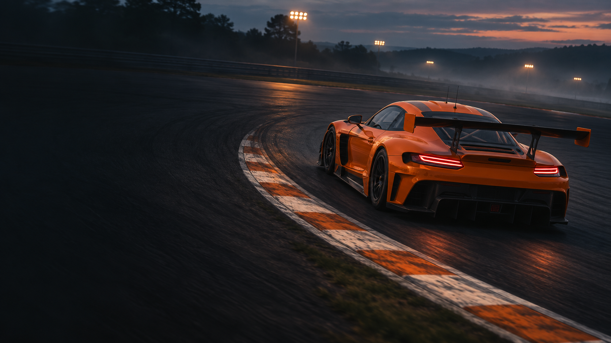
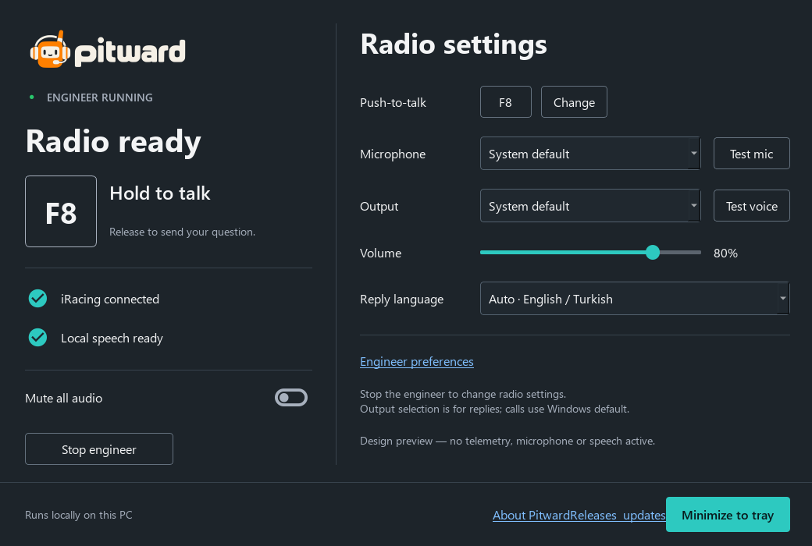

The right context.
Live racing telemetry, automatic radio calls, and answers grounded in the information your engineer has.

Get Pitward
One more voice in your corner.
A local race engineer for iRacing.
Built to keep you in the race.
YOUR NEXT SESSION.
A LITTLE MORE CONNECTED.
Local AI. No cloud inference.
Press to talk. Release to ask.
Built around iRacing telemetry.
You handle the next corner.
Pitward brings the context.
Live racing telemetry, automatic radio calls, and answers grounded in the information your engineer has.
Bind push-to-talk to your keyboard, mouse, or wheel. Ask a question and hear a spoken reply without leaving your session.
Speech and conversations run on your PC. Driver preferences, settings, and history stay local.
Everything within reach.
Ready when you are.

Actual desktop panel in preview mode. No live telemetry shown.
01 / One place for your radio
02 / Your devices, your controls
03 / Local by design
The first release of your local race engineer.
One app. Your PC. Your race.
Version 0.1.0/Windows x64
The first release is being prepared. Downloads appear here after publication.
Windows 11 x64 is the release test target. First setup downloads approximately 5.9 GB of local AI components. Internet is needed for setup.
This is an early release. Packaged inference uses CPU, and speech may be too slow for racing on some PCs.
Turkish conversation is still unvalidated. Builds are unsigned, so Windows may display a SmartScreen prompt.
Known limitationsRun the Windows installer, or extract the portable ZIP and open Pitward.exe.
Choose “Set up local AI components,” review the third-party terms, and let the verified downloads finish. Restart Pitward.
Choose your devices. Bind push-to-talk. Check your voice output. Then start iRacing and your engineer.